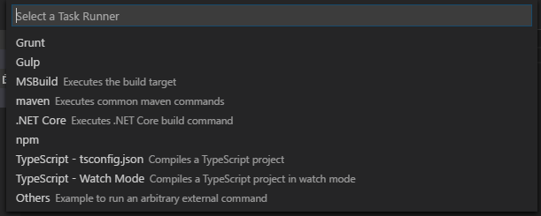

npm install -g typescript
Note you can install a specific version with npm by running, for example:
npm install typescript@2.0.0.
Here's the output I saw:
C:\Users\Leon\AppData\Roaming\npm\tsserver -> C:\Users\Leon\AppData\Roaming\npm\node_modules\typescript\bin\tsserver
C:\Users\Leon\AppData\Roaming\npm\tsc -> C:\Users\Leon\AppData\Roaming\npm\node_modules\typescript\bin\tsc
C:\Users\Leon\AppData\Roaming\npm
+-- typescript@2.0.10
See if tsc (the typescript compiler) was installed by running:
tsc --help
Result will be something like this:
Version 1.0.3.0
Syntax: tsc [options] [file ..]
Examples: tsc hello.ts
tsc --out foo.js foo.ts
tsc @args.txt
Options:
--codepage NUMBER Specify the codepage to use when opening source files.
-d, --declaration Generates corresponding .d.ts file.
-h, --help Print this message.
--mapRoot LOCATION Specifies the location where debugger should locate map files instead of generated locations.
-m KIND, --module KIND Specify module code generation: 'commonjs' or 'amd'
--noImplicitAny Warn on expressions and declarations with an implied 'any' type.
--out FILE Concatenate and emit output to single file.
--outDir DIRECTORY Redirect output structure to the directory.
--removeComments Do not emit comments to output.
--sourcemap Generates corresponding .map file.
--sourceRoot LOCATION Specifies the location where debugger should locate TypeScript files instead of source locations.
-t VERSION, --target VERSION Specify ECMAScript target version: 'ES3' (default), or 'ES5'
-v, --version Print the compiler's version: 1.0.3.0
@<file> Insert command line options and files from a file.
Create a simple javascript file, with a .ts extension, e.g.
log.ts:
console.log("hi");
then transpile it into a js file, by running tsc log.ts -- the result is a javascript file, log.js which in this case is identical.
Done that!? Woot! You're a typescript developser!
So i load it up in visual studio code, by running "code.exe ." from the commandline, i.e.
code .
The output from tsc --help above said my tsc version was 1.0.3.0, even though the installer said "typescript@2.0.10"
When I started vs code it straight away gave me this warning:
Version mismatch! global tsc (1.0.3.0) != VS Code's language service (2.0.10). Inconsistent compile errors might occur
I looked further into it, by running "Get-Command tsc" (in powershell) and found tsc was being loaded from:
C:\Program Files (x86)\Microsoft SDKs\TypeScript\1.0\tsc.exe
Why? Because some earlier SDK i'd installed had added that folder to my path.
So that old exe was found, instead of finding the one installed by npm, which is located here:
C:\Users\Leon\AppData\Roaming\npm\tsc.cmd
So I edited my path to remove that folder from it (notes on editing environment variables here...)
You can compile multiple files at once:
tsc *.ts
That will produce one js file for each ts file.
You can combine all the ts files into one js file.
tsc *.ts --out example.js
But howbout this for clever... you can tell typescript to watch files and recompile as soon as 1 changes...
tsc *.ts --out example.js --watch
The first step in working on a TypeScript project in visual studio code is to add a tsconfig.json file to the root of the project.
It can be an empty object, like this:
{
}
But why not spruce it up a bit by adding something like this...
{
"compilerOptions": {
"target": "es5",
"module": "commonjs",
"sourceMap": true
}
}
Choices under 'target' are currently:
Knowing what these mysterious things mean is part of the magic of being a web developer in 2017. Know one knows the whole path around the elephant.
Press ctrl shift P (and do it sort of casually, like you knew that was the right thing to do all along)
That brings up what is known as the command palette. (You can also find it under the 'View' menu, where it helpfully reminds you that ctrl shift p is the key combo to know)
Type: tasks: Configure Task Runner (or any shortest unique substring of that command)...
...and vs code will lead you toward choosing the right type of tasks.json file for your nascent project, and then create it for you (in a .vscode folder)

You can learn more about the tasks.json file format by visiting http://code.visualstudio.com/docs/editor/tasks -- but ain't nobody got time for that.